Terraristik
Seit vielen Jahren widme ich mich der Terraristik. Ich habe 1997 mit meiner ersten Vogelspinne begonnen. Mich fasziniert, wie unterschiedlich das Leben in kleinen, sorgfältig eingerichteten Lebensräumen aussehen kann – von tropisch-feuchten Terrarien bis zu hochorganisierten Insektenstaaten. Hier stelle ich euch die drei Tiergruppen vor, die mich aktuell am meisten begeistern.
Pfeilgiftfrösche
Pfeilgiftfrösche (Dendrobatidae) stammen aus den Regenwäldern Mittel- und Südamerikas und beeindrucken durch ihre leuchtenden Farben und ihr interessantes Sozialverhalten. In menschlicher Obhut, mit ausgewogener Ernährung, verlieren die Frösche ihre Giftigkeit – ihre Farbenpracht und ihr spannendes Verhalten bleiben aber erhalten. Ich halte sie in dicht bepflanzten, feuchten Terrarien, die ihrem natürlichen Lebensraum nachempfunden sind.
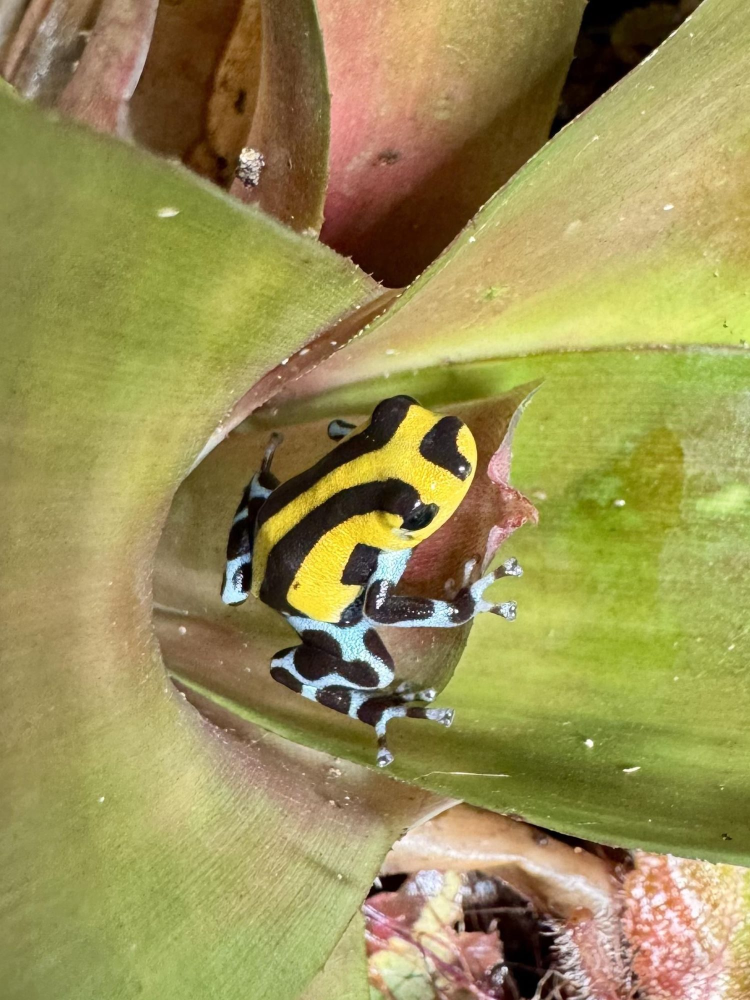

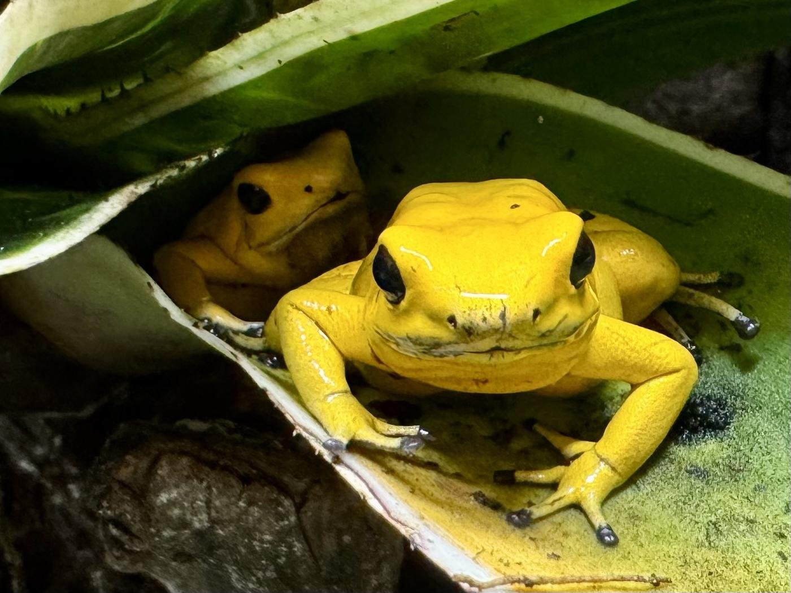
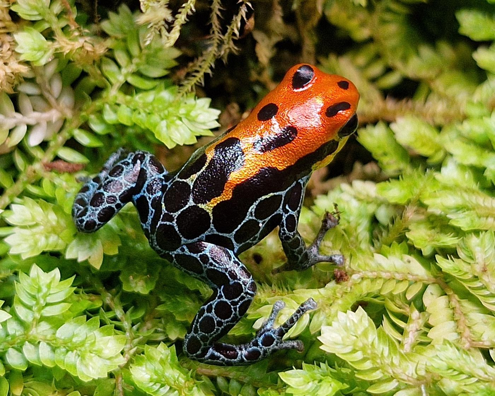
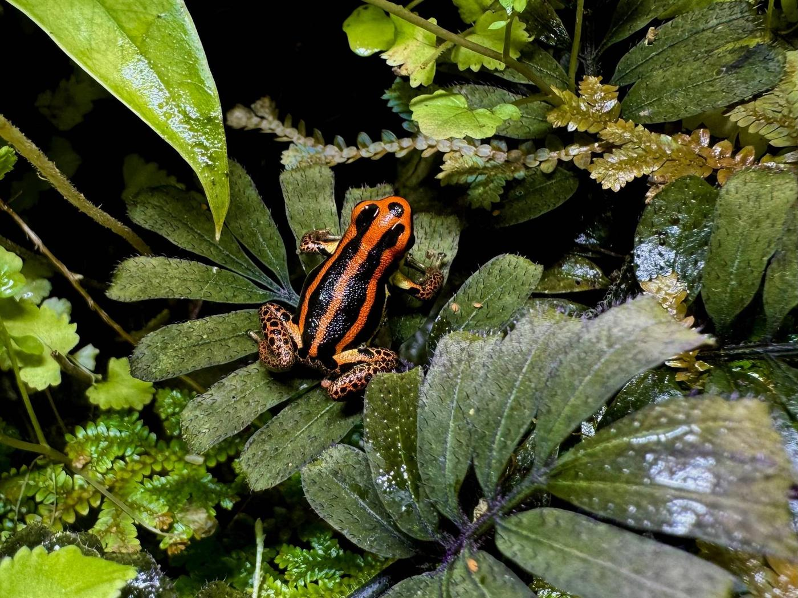
Vogelspinnen
Vogelspinnen gehören zu den ältesten Spinnentieren der Welt und sind trotz ihres Rufs meist ruhige, genügsame Pfleglinge. Mich begeistert die riesige Vielfalt an Arten, Farben und Verhaltensweisen – von bodenbewohnenden bis zu baumbewohnenden Arten. Jedes Tier bekommt ein auf seine Art abgestimmtes Terrarium mit passendem Substrat, Versteck und Klima.
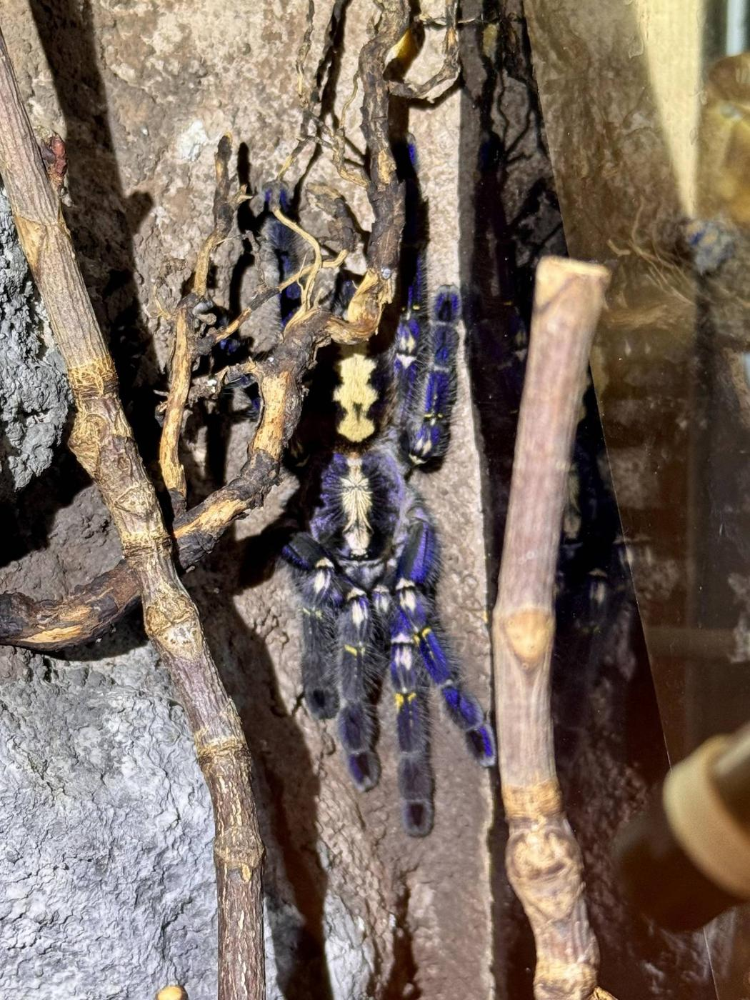
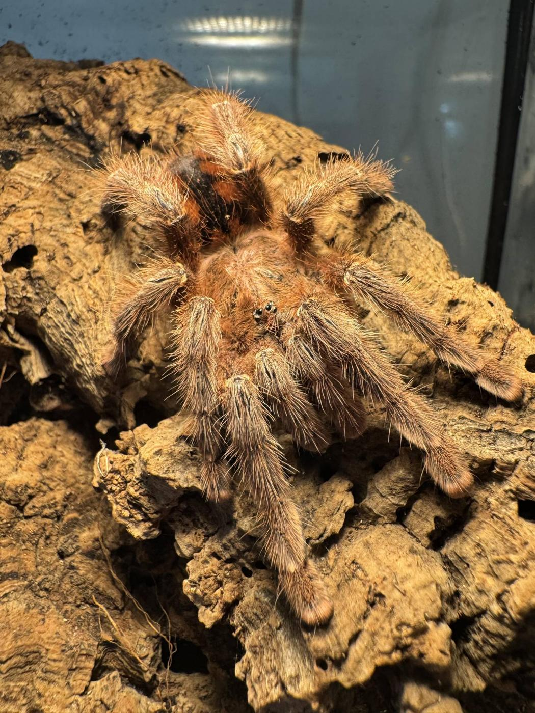
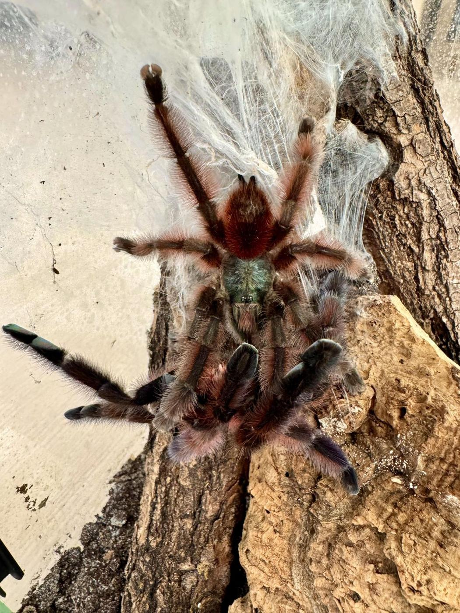
Ameisen
Ameisenstaaten sind kleine Wunderwerke der Organisation. Von der ersten Königin bis zum wachsenden Volk lässt sich beobachten, wie Arbeitsteilung, Nestbau und Futtersuche ganz ohne zentrale Steuerung funktionieren. Ich halte meine Kolonien in Formicarien, die genug Platz für Nestkammern und eine angeschlossene Arena zur Futtersuche bieten.
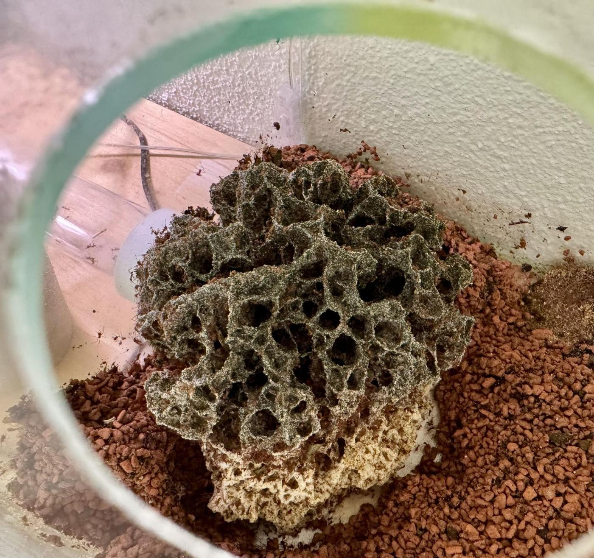
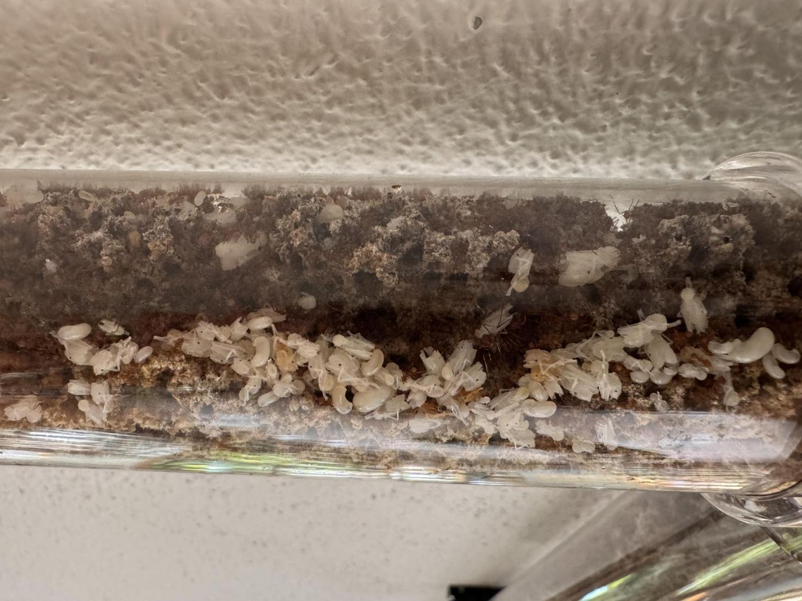
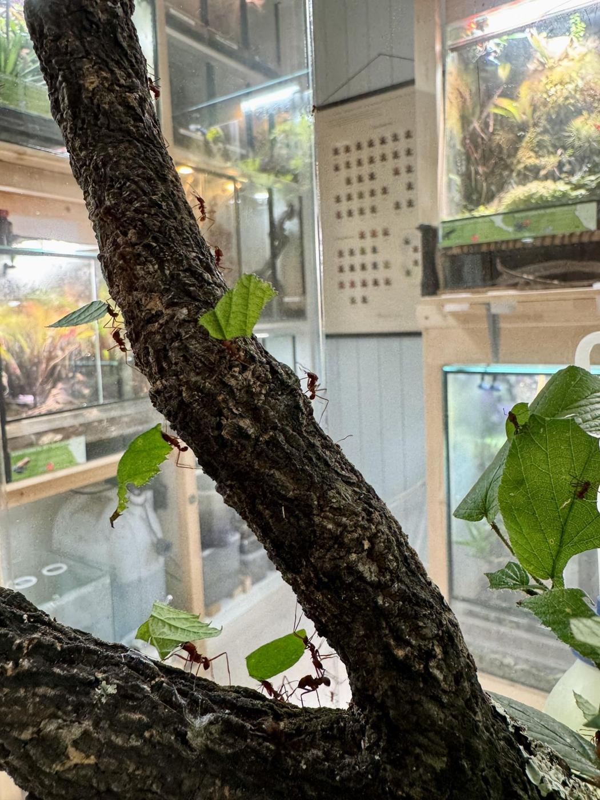
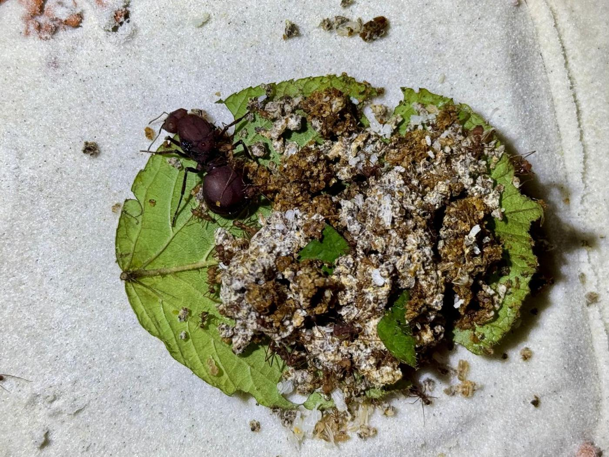